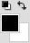
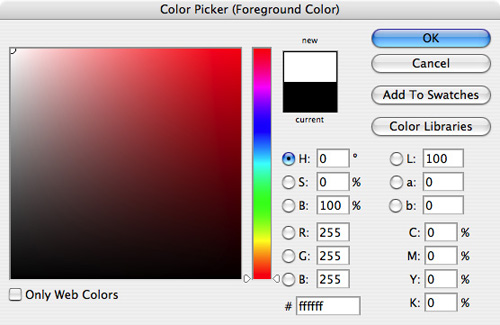
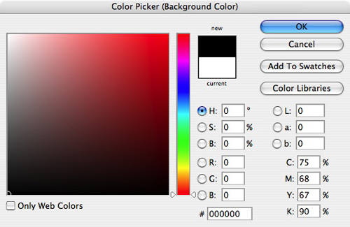

Color Picker Panel: Find Character ID Code to Register Events
The third part of the Color Picker Panel is finding the character ID code associated with actions/events in Adobe Photoshop. The actions/events that the developer will obtain is resetting the foreground and background color, changing the foreground color, and changing the background color. The result is a JavaScript (JSX) output log showing the functions and character ID code of the events to reset the foreground and background color, changing the foreground color, and changing the background color.
Instructions:
- Complete Setting Up Script Listener.
- Open Adobe Photoshop.
- Press d on the keyboard to set the Default Foregrounds and Backgrounds Color to a black foreground and white background on the Tools Palette or click on the top-right icon as seen below found on the Tools Palette:
 - Change the foreground color in the Color Picker (Foreground Color) dialog to white.
 - Press OK.
- Change the background color in the Color Picker (Background Color) dialog to black.
 - Press OK.
- Close Adobe Photoshop.
- Open ScriptingListenerJS.log on the Desktop with a text editor.
- The code within ScriptingListenerJS.log should be similar to below:
// ======================================================= var idRset = charIDToTypeID( "Rset" ); var desc26 = new ActionDescriptor(); var idnull = charIDToTypeID( "null" ); var ref18 = new ActionReference(); var idClr = charIDToTypeID( "Clr " ); var idClrs = charIDToTypeID( "Clrs" ); ref18.putProperty( idClr, idClrs ); desc26.putReference( idnull, ref18 ); executeAction( idRset, desc26, DialogModes.NO ); // ======================================================= var idsetd = charIDToTypeID( "setd" ); var desc27 = new ActionDescriptor(); var idnull = charIDToTypeID( "null" ); var ref19 = new ActionReference(); var idClr = charIDToTypeID( "Clr " ); var idFrgC = charIDToTypeID( "FrgC" ); ref19.putProperty( idClr, idFrgC ); desc27.putReference( idnull, ref19 ); var idT = charIDToTypeID( "T " ); var desc28 = new ActionDescriptor(); var idH = charIDToTypeID( "H " ); var idAng = charIDToTypeID( "#Ang" ); desc28.putUnitDouble( idH, idAng, 0.000000 ); var idStrt = charIDToTypeID( "Strt" ); desc28.putDouble( idStrt, 0.000000 ); var idBrgh = charIDToTypeID( "Brgh" ); desc28.putDouble( idBrgh, 100.000000 ); var idHSBC = charIDToTypeID( "HSBC" ); desc27.putObject( idT, idHSBC, desc28 ); executeAction( idsetd, desc27, DialogModes.NO ); // ======================================================= var idsetd = charIDToTypeID( "setd" ); var desc29 = new ActionDescriptor(); var idnull = charIDToTypeID( "null" ); var ref20 = new ActionReference(); var idClr = charIDToTypeID( "Clr " ); var idBckC = charIDToTypeID( "BckC" ); ref20.putProperty( idClr, idBckC ); desc29.putReference( idnull, ref20 ); var idT = charIDToTypeID( "T " ); var desc30 = new ActionDescriptor(); var idH = charIDToTypeID( "H " ); var idAng = charIDToTypeID( "#Ang" ); desc30.putUnitDouble( idH, idAng, 0.000000 ); var idStrt = charIDToTypeID( "Strt" ); desc30.putDouble( idStrt, 0.000000 ); var idBrgh = charIDToTypeID( "Brgh" ); desc30.putDouble( idBrgh, 0.000000 ); var idHSBC = charIDToTypeID( "HSBC" ); desc29.putObject( idT, idHSBC, desc30 ); executeAction( idsetd, desc29, DialogModes.NO );Code Walkthrough: There are three parts of the code generated by actions/events made in Adobe Photoshop:
- Reset the foreground and background color
- Set the foreground color
- Set the background color
There is a special four character ID code placed as a parameter of the functioncharIDToTypeIDfound on the first line of each part of the code. It states that whenever a user resets the foreground and background or sets either the foreground or background color, the character ID key to call those actions/events areRsetandsetdrespectively. The two character ID code will be used later in this tutorial.
Note: Other actions or events could also contain thesetdparameter although a different block of code is produced. - Close the text editor.